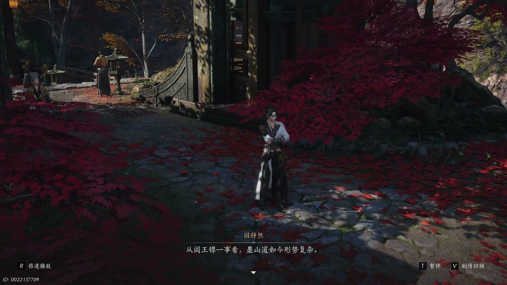
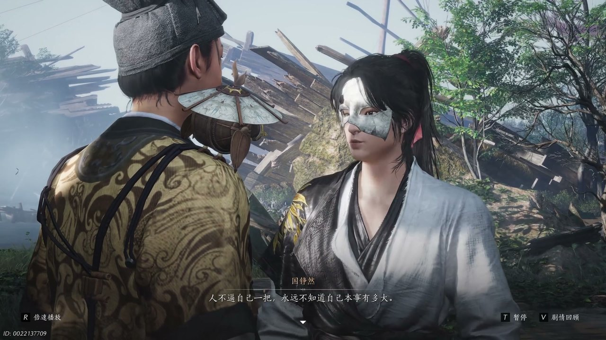
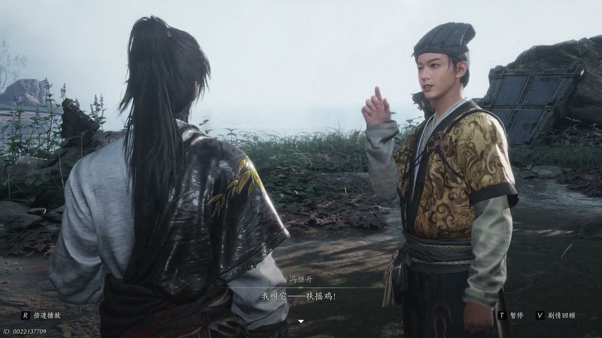
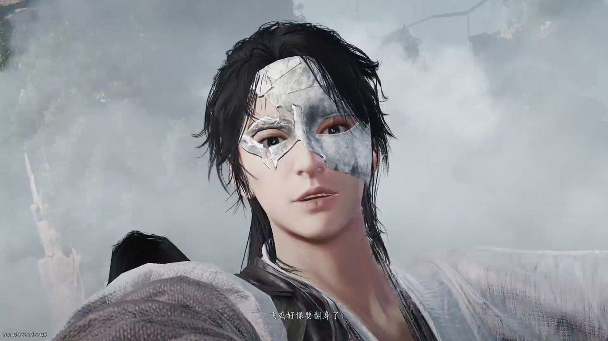
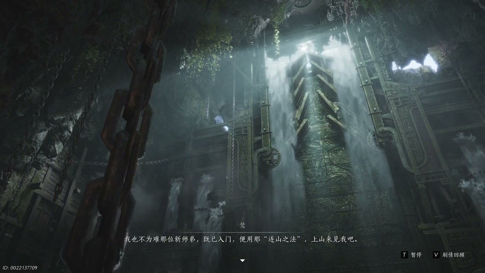
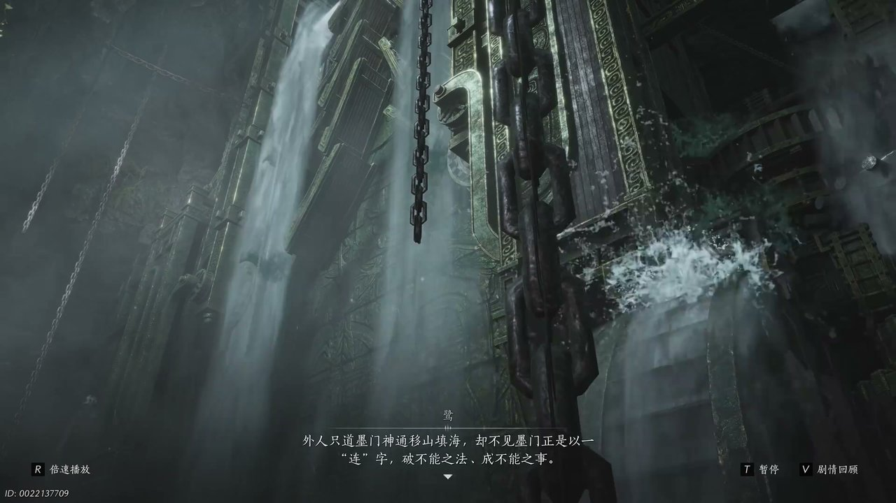

燕云背后的故事：第21集 不见山
燕云背后的故事：第21集 不见山

朋友们，上一集咱们说到——船队集结待发、雾锁迷津阵法、流民各怀心思；新来的朋友可能纳闷，少东家凝聚众人船只，为何还要执意闯入墨门地界。简单说，少东家想要借着渡过迷雾长河的机会，深入桃园秘境，查清心中牵挂之人的下落。可他哪知道，渡过雾河只是开始，墨山道接探崖是难以逾越的天险。这不，少东家打算依靠墨门机关造物，打造飞行器具翻越险峻山崖。

接探崖四周悬崖陡峭，岩壁光秃秃没有任何可以借力的地方，山风呼啸着掠过崖壁，卷起碎石不断滚落。少东家站在崖边四处打量，指尖轻轻摩挲着散落的墨门机巧构件，缓缓开口说道：“墨山道剑派之人还挺聪明的。这接探崖是天险，四周并无借力之处，那要想进去真得长个翅膀。”他望着远处墨门打造的飞鹿机关，心中豁然开朗，继续说道：“见了人家的飞鹿才知道，荣将军的飞跃大概也是同样的用处，怪不得这里处处都是技巧。”晋中原皱着眉头连连摆手，认为仅凭轻功翻越整座高山根本不切实际。少东家转头看向一旁的冯继升，询问墨门弟子是否擅长打造可载人的飞鸟机关，冯继升点头承认此地构件正是打造飞禽机关所用，少东家当即下定决心，让冯继升打造一架能够载人翻越山崖的机关。

崖边空地散落着大量木料、石件与机关零件，阳光透过云层落在一堆零碎构件之上，冯继升面露难色，看着陡峭的崖壁连连摇头：“我造飞机真的假的。”少东家拍了拍他的肩膀，语气坚定地说道：“人不逼自己一把，永远不知道自己本事有多大。咱们三人这一路诸多不易，你不能就停在这最后一步，一切就都靠你了。”冯继升陷入沉思，独自蹲在地上勾画机关图纸，片刻之后忽然灵光一闪。一旁的晋中原不愿参与这般冒险的举动，借口自己有性命攸关的要事，匆匆转身离去，留下二人面面相觑。冯继升拿出自己绘制的机关草图，参照白鹭入水划水的原理，设计出依靠风力升空的机关，少东家看过图纸之后连连称赞，直言冯继升极具天赋。

冯继升铺开兽皮图纸，细细描绘机关双翅的纹路，手指在图纸之上不断比划风力走向，认真解释自己的设计思路：“嗟叹崖比我们这里高出不少，若只是嫔妃自然难以越过，所以这羽毛正如鸡之双翅，让飞机向上飞。只要一左一右双翅同力，就如华风之桨，可如大鹏展翅，乘风扶摇而上，我叫他扶摇机。”少东家念着名字觉得拗口，结合冯继升的名字，提议将机关命名为寄生机，寓意技艺高升。冯继升十分喜爱这个名字，立刻开始调配材料，告知少东家机关双翅必须对称才能顺利升空，需要他帮忙收集各类构件。二人通力合作，将木料打磨光滑，组装齿轮与木翅，耗时许久终于打造出庞大的寄生机，冯继升满心期待，操控机关准备升空翻越山崖。

寄生机缓缓升空，巨大木翅划破气流，机身微微摇晃，冯继升紧紧抓着机关扶手，神色紧张地喊道：“那是什么？你机好像要翻身了，这是正常的吗？”机关在空中失去平衡，猛地朝着崖壁一侧倾斜，二人随着机身一同坠落，重重摔落在一处平台之上。少东家挣扎着起身，环顾四周发现二人竟然落在了接探崖山门之外，冯继升腿部摔伤，额头渗出汗珠，却强撑着露出笑容。他担心少东家并非墨门弟子的身份暴露，取出一枚墨门弟子令交给少东家，叮嘱他谎称是彭师叔在外游历收下的弟子，还特意编造好说辞，用来应对守崖的陆师姐，避免二人被墨门弟子驱逐出山。

山门机关石门紧闭，石壁之上刻满墨门符文，冯继升将弟子令嵌入凹槽之中，沉重石门缓缓向内开启。守崖的陆师姐立于石阶之上，目光锐利，听闻二人来历之后，不愿轻易放行，开口说道：“那位新师弟既已入门，便用那连山之法上山来见我了。山高雅险，你既是领路之人，不妨再多送一程，我便在崖上静候二位。”冯继升腿部受伤行动不便，顿时面露慌张。少东家仔细观察两侧岩壁的机关匣，发现匣中藏有铁索，明白连山之法是依靠机关铁索搭建通路。他运转内力，牵引铁索相互连接，又让冯继升寻找木板铺设通路，依靠连绵不断的内力打通机关，顺利搭建出通往崖顶的路径。

二人顺着铁索搭建的通路前行，半途又遇上可移动的高台机关，高台松开机关便会自行降落，必须有人持续推动机关才能保持升起状态。冯继升不顾腿伤，咬牙推动沉重机关，语气坚定地说道：“二人同心，其利断金，不就是推动机关吗，我能行。”高台缓缓升起，少东家借着高台铁索跃至前方平台，冯继升坚持跟上步伐。崖顶之上，陆师姐看着二人携手破阵的模样十分认可，坦言连山诀的精髓在于一个“连”字：“外人只道墨门神通，移山填海，却不见墨门正是以一莲字破不能之法，成不能之事。”陆师姐看破少东家并非墨门弟子，却认可他的才智，准许他进入不见山腹地，却将冯继升拦下，单独询问墨门旧事。
这一集看下来，我最大的感受就是绝境之中同心协力，便能冲破所有阻碍。上一集里我们只知道雾河难渡、墨门森严、桃园隐秘，到了这一集，我们造出寄生机、闯过接探崖、混入不见山三条全新线索。陆师姐为何刻意留下冯继升问话？不见山腹地藏着什么秘密？墨门巨子究竟身在何处？所有线索尽数收拢，少东家独自踏入不见山内部打探消息，四处询问巨子的下落，想要找到自己牵挂之人。下一集，少东家混迹墨山道内部，打探寒姨的踪迹。评论区聊聊你觉得少东家能不能顺利见到墨门巨子，点赞关注，下一集解锁墨山道内部秘闻、寻访巨子居所的精彩剧情！
关于我们
📱 公众号名称：三天游戏
✍️ 作者：曾三天
扫码关注公众号，获取每日最新资讯

商务合作与版权
商务合作 / 内容投稿 / 品牌推广
请关注公众号「三天游戏」后台留言联系
版权声明：本文由作者整理，转载需注明出处。